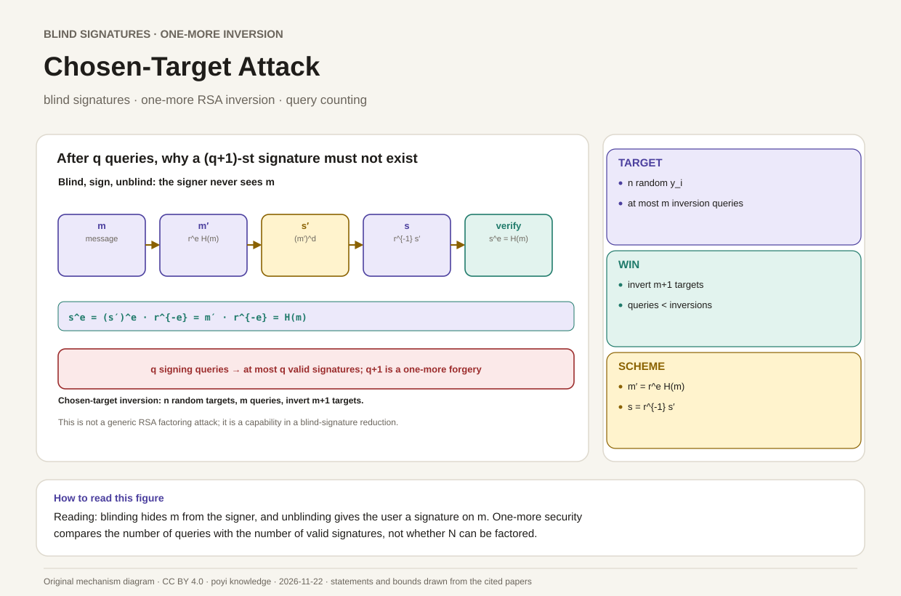
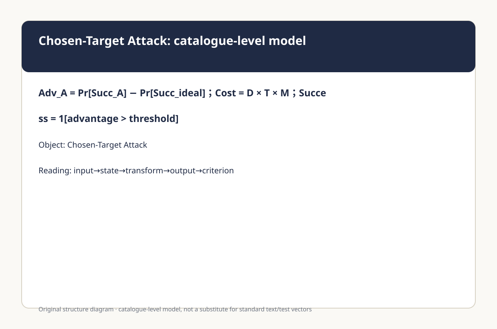

Principles
Attack: Chosen-Target Attack (选择目标攻击). ### Define “chosen-target attack” precisely
In Chaum’s RSA blind signature, the signer’s public key is (N,e) and the private exponent is d. A user wants a signature on a message m without revealing m to the signer:
- Pick a random blinding factor r and compute m′ = r^e · H(m) mod N. Send m′ to the signer and receive s′ = (m′)^d mod N. Remove the blinding: s = r^{-1} · s′ mod N. s^e = (s′)^e · r^{-e} = m′ · r^{-e} = H(m) mod N. The signer sees only m′ and not m; the user obtains a valid signature on m. ### The one-more reduction
If an adversary can turn q signing queries into q+1 valid message-signature pairs, those pairs can be embedded into the chosen-target inversion game, producing more RSA inversions than the number of oracle queries. Conversely, if chosen-target inversion is hard, Chaum’s scheme has one-more unforgeability in the random-oracle model. The “attack” here is a capability in a reduction, not a directly runnable factoring algorithm.

Why it matters
A blind signature has a different privacy goal from an ordinary signature: the signer does not know the message, so it cannot impose message-based access control. If security only required “cannot forge a signature on a new message”, an adversary might obtain several usable signatures from one signing query and break the “withdraw once, spend once” accounting of electronic cash. One-more unforgeability compares the number of queries with the number of valid signatures, which is exactly the excess forgery this setting must exclude.
Known-target inversion requires the adversary to invert all given targets; chosen-target lets it choose a subset, as long as the number of inverted targets exceeds the number of queries. One of Bellare et al.’s main results is that the two problems are polynomially equivalent, so proving either hard suffices to support Chaum’s scheme. The equivalence is a reduction result; it does not mean the two games are identical in implementation.
Blind signatures also depend on the blinding function, signer state management, randomness quality and double-spend prevention. One-more unforgeability does not solve those engineering problems; it covers only the “number of signatures” dimension.
Applications
- State the model: RSA blind signature, blind Schnorr, blind BLS or an OPRF variant; the hardness assumption differs. 2. Write down the query count: how many valid signatures may be output after q signing queries; q+1 is a failure under one-more unforgeability. 3. Check the blind/unblind algebra: whether m′ and s preserve the relation, and whether the verification equation holds. 4. Check the reduction: is the scheme reduced to chosen-target/known-target inversion, or only to ordinary RSA one-wayness? 5. Check the random-oracle assumption and the hash domain; Chaum’s proof is in the ROM. 6. Check the engineering layer: predictability of blinding factors, signer records of used blinded values, and double-spend prevention.
Electronic cash, privacy tokens, anonymous credentials and Privacy Pass-style protocols use blind signatures or OPRFs. Do not treat “blind” as a synonym for “secure”; prove privacy (blindness) and unforgeability (one-more) separately.

Limits & attacks
- Not a generic RSA attack. Chosen-target inversion assumes RSA inversion is hard; it does not provide a way to factor N. 2. Not true for every blind signature. Different blind-signature schemes have different blinding relations and hardness problems; Chaum’s reduction cannot be copied directly onto blind Schnorr or blind BLS. 3. Blindness does not imply unforgeability. A scheme can hide the message perfectly and still allow one query to produce several signatures; privacy and unforgeability are independent goals. 4. Random-oracle model. Chaum’s proof is in the ROM; instantiation in the standard model needs additional argument. 5. Signer state and double spending. If the signer does not record used blinded values, or a user can reuse one signature, engineering attacks outside the one-more model remain possible. 6. Blinding-factor quality. Predictable or repeated r links messages, leaks privacy, and may even break the algebraic relation.
History
Chaum introduced blind signatures in his 1983 CRYPTO paper and used them for untraceable electronic payments: a bank signs without seeing the message, and the user can later prove that a payment is valid while the bank cannot link the signature to the user. This is the starting point of blinding as a privacy primitive.
Bellare, Namprempre, Pointcheval and Semanko formalised the one-more-RSA-inversion problem in their 2003 Journal of Cryptology paper, defined the chosen-target and known-target variants, proved them polynomially equivalent, and proved the security of Chaum’s blind signature scheme in the random-oracle model. One-more unforgeability then became standard language for blind-signature security.
Worked example & verification
Formal model and reproduction steps
[\mathrm{Adv}^{\mathrm{attack}}_A(\lambda)=\Pr[\mathrm{Game}_A(\lambda)=1]-\frac12]
Chosen-Target Attack: the registered public parameters, key material or randomness, and message are mapped through the stated transformation to an output checked against the registered criterion. The worked example is a structural reproduction, not a new test vector; parameter ranges, standard versions and implementation details remain source-bound.
References
- Wikipedia search entry for 选择目标攻击. https://zh.wikipedia.org/w/index.php?search=%E9%80%89%E6%8B%A9%E7%9B%AE%E6%A0%87%E6%94%BB%E5%87%BB
- Handbook of Applied Cryptography (Menezes, van Oorschot, Vanstone). https://www.cacr.math.uwaterloo.ca/hac/